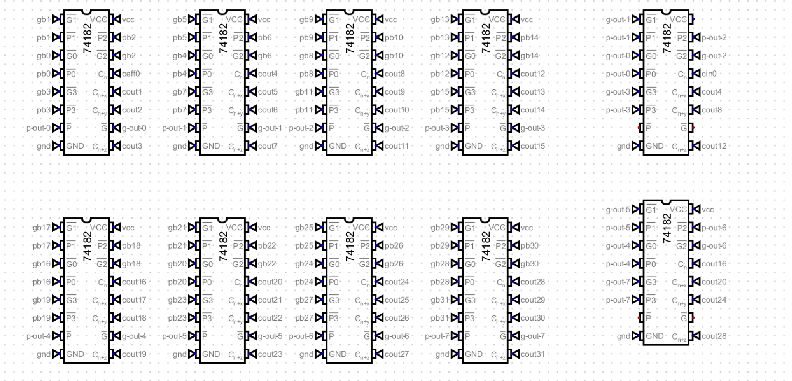

Dispatch · ALU
NAND the generate. Spare gates as inverters. 74283 per nibble.
The look-ahead was bloated on AND and XOR plus a bank of 74541 drivers. Swap to NAND, fold inversions into packages already on the board, slice the adder on 4-bit 74283s.
In the initial architecture, generate and propagate for the 74182 look-ahead was bottlenecked by a naïve AND and XOR implementation. That required a massive array of 74541 inverting drivers, which created routing congestion and footprint bloat.

Fig. — Ten 74182sLookahead before the spine problem on a flat PCB
Swap AND for NAND and the inverter bank leaves. Spare gates in existing NAND packages become single-input inverters — NAND(a, a) is not a. That bypasses XNOR open-drain headaches and pull-up resistor management. About eight inverting-driver chips off the board.
The core arithmetic moves to 74283. The 32-bit ALU modularizes into eight discrete 4-bit slices, each paired to a dedicated 74283. Routing stays local to the slice. The layout in KiCad can finally match the logic.